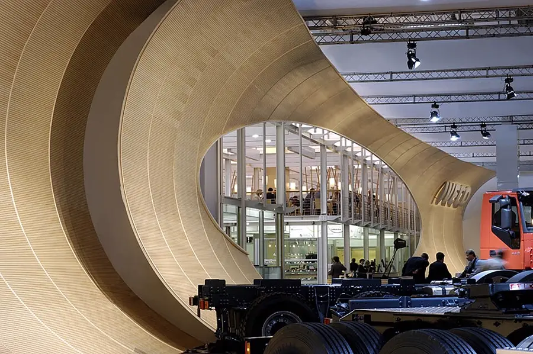

이베코 Iveco
이베코(Iveco)는 이탈리아 토리노에 본사를 둔 상용차 및 중장비 제조 업체이다. 1975년에 설립되었으며 버스와 트럭, 디젤 엔진 등을 생산한다.
최종 업데이트

이베코는 어떤 브랜드인가
이베코는 이탈리아 토리노에 본사를 둔 상용차 및 중장비 제조 업체이다. 유럽을 비롯해 대한민국, 중화인민공화국, 인도, 러시아, 터키, 오스트레일리아, 아르헨티나, 브라질, 남아프리카공화국 등에 100개 이상의 공장을 보유하고 있다.
전체 상용차 기준으로 연간 15만 대를 생산하며 디젤 엔진은 약 40만 개를 생산한다. 현재 이베코 그룹에 속해 있고 모기업은 CNH 산업이다.
대한민국에서는 2015년에 지사를 설립하고 카고 및 덤프 트럭과 승합 차량 판매에 들어갔다. 2024년 9월에는 현대 ST1의 배지 엔지니어링 버전인 이베코 e무비를 선보였다.
이베코는 어떻게 시작되고 성장했나
이베코의 브랜드 아이덴티티는 무엇인가
이탈리아 토리노에 본사를 둔 상용차 및 중장비 제조 업체로, 1975년 여러 유럽 상용차 업체의 합병으로 설립된 점이 특징이다.
이베코의 대표 제품과 서비스는 무엇인가
이베코는 지금 어떤 상태인가
현재 이베코 그룹에 속해 있으며 모기업은 CNH 산업이다. 전체 상용차 기준으로 연간 15만 대를 생산하고 디젤 엔진은 약 40만 개를 생산한다.
대한민국에서는 2015년에 지사를 설립하고 카고 및 덤프 트럭과 승합 차량 판매에 들어갔으며, 광주광역시 광산구에 생산 공장을 설립해 운영에 들어갔다. 2024년 9월에는 이베코 e무비를 선보였다.
이베코 로고는 어떻게 변해왔나
시기는 위키데이터 로고 기간 또는 위키미디어 커먼즈 파일 정보 기준입니다. 이미지를 누르면 원본 파일과 라이선스를 볼 수 있습니다.
사진으로 보는 이베코의 역사

자주 묻는 질문
이베코는 어느 나라 브랜드인가요?
이베코는 이탈리아의 모빌리티 브랜드입니다.
이베코는 언제 설립되었나요?
이베코는 1975년 설립되었습니다.
이베코의 브랜드 아이덴티티는 무엇인가요?
이탈리아 토리노에 본사를 둔 상용차 및 중장비 제조 업체로, 1975년 여러 유럽 상용차 업체의 합병으로 설립된 점이 특징이다.
이베코의 대표 제품은 무엇인가요?
현재 생산 차종으로는 데일리, 스트랄리스, 스트레이터, 아코, 오우바, 유로카고, 유로파이어, 터보 데일리, 트래블, 트래커, 파워스타 등이 있다.
이베코는 어느 기업이 소유하고 있나요?
현재 이베코 그룹에 속해 있으며 모기업은 CNH 산업이다.
이베코의 창업자는 누구인가요?
이베코의 창업자는 Fiat Group입니다(위키데이터 기준).
이베코의 본사는 어디에 있나요?
이베코의 본사는 토리노에 있습니다(위키데이터 기준).
출처와 검증
이베코 관련 참고: 공식 웹사이트 · 위키데이터 Q29913 · 한국어 위키백과 · 영어 위키백과. 브랜드명은 한글과 원어를 함께 표기하되 데이터에 없는 표기는 만들지 않습니다. 기원 국가·설립연도는 검수된 정의문에서 확인된 값을 우선하고, 없을 때만 공식 웹사이트 URL이 일치하는 위키데이터 개체의 값을 씁니다. 탄생일의 월·일은 위키데이터, 위키백과 정보상자, 본문 가운데 같은 연월로 확인되는 값만 싣고, 출처끼리 다르면 싣지 않습니다. 위키데이터 값은 2026-11-11 기준입니다.